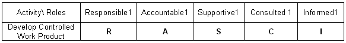
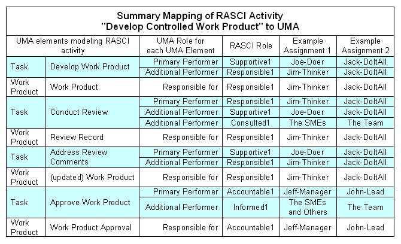

The mapping described here (with the associated Capability Pattern: Develop a Controlled Work Product) is a useful starting point
for defining how the development of a new work product should unfold in a controlled environment or, alternatively, to
assess the effectiveness of an existing quality-minded development activity.
An Introduction to RASCI
The RASCI model (sometimes RACI) is a simple approach to characterizing roles and responsibilities for
performing development activities.
RASCI stands for:
-
R = Responsible: Tasked with the overall completion and correctness of the activity (usually the lead
or the owner for the problem or project)
-
A = Accountable: Identifies the role to whom "R" is accountable (usually the role authorized to
approve the work)
-
S = Supportive: Provides resources to, or can play a supporting role for, "R" in producing the
result (usually a developer)
-
C = Consulted: Has information and competencies needed to assess the work (usually a SME or
technical stakeholder)
-
I = Informed: To be notified of results only (usually other workers affected by the contents of what
is produced)
RASCI is supported by a technique supported by a RACI matrix or RACI chart. This chart is a simple table
where rows are activities or processes, and columns represent roles involved in these activities. at the intersection
the letters R, A, S, C, I (or nothing) are to be placed depending on the involvement of the role in the activity.
Developing a RACI matrix supports method building by fostering communication and encouraging discussion about roles and
their involvement in the organization's activities. The process followed in building the matrix is:
-
Identify all of the activities of concern, and list them down the left hand side of the matrix.
-
Identify all of the roles involved, and list them along the top of the matrix.
-
Complete the cells of the matrix by identifying who has the R, A, S, C, I (or no involvement) for each
activity.
-
Every activity should have one and only one “R” and only one "A". A gap occurs for each activity with no
“R” (no role is responsible), and an overlap occurs when multiple roles exist that have an “R” or an "A" for a
given activity.
-
Resolve Overlaps: Overlaps usually indicates that the activity is not granular enough or not well-enough
understood. The answer is therefore that you need to further study and detail its structure to separate out the
individual responsibilities.
-
Resolve Gaps: Gaps mean that either a role is missing from the matrix or a responsibility of a role has
been overlooked. The individual with the authority for defining roles must determine which existing role is
responsible, or if a new role is required.
Simple Application of RASCI to Work Product Development
The rich RASCI characterization facilitates the identification of the roles needed to conduct work product development
in a controlled environment. It can support the following important process properties:
-
Assigning responsibilities to the right role
-
Achieving separation of roles and thereby contributing to Separation of Duties
The activity "Develop Controlled Work Product", which is central to compliance management, can thus be represented
generically by the following RASCI matrix as it involves all of the RASCI roles:

Responsible1, Accountable1, and so on are placeholders for the organization's roles you would select for the
corresponding responsibilities, depending on the kind of work product you envision developing. Note, however, that the
RASCI model does not capture the work products produced, and thus cannot model work-product ownership.
Using UMA to model and expand the RASCI model
UMA offers a characterization of roles that can be used successfully in modeling the RASCI model. It consists of:
-
Role responsible for a Work product
-
Role responsible for unfolding a Task
-
Role participating in executing a Task
To Map these to the RASCI roles effectively, you first observe that the purpose of the "develop controlled work
product" activity is to produce several work products (the work product itself, review comments, and eventually the
approval for the work product). This typically involve the following 4 key tasks:
-
Develop Work Product produces the initial version of the work product
-
Conduct Review produces review comments
-
Address Review Comments updates the work product according to review comments
-
Approve Work Product produces an Approval Record
. The workflow for these tasks is described in the generic Capability Pattern: Develop a Controlled Work Product task, whose purpose is to
provide an auditable workflow for work product development. The mapping of the RASCI model to UMA causes an expansion
of the scope of the RASCI model to include both activities and work products. This is desirable because there are many
situations where work products must be viewed independently of the process that produces them. In such situations, it
is important to determine who owns these work products.
Roles are mapped as follows:
-
Responsible1 is mapped to the technical authority responsible for developing, and for conducting
the review of, the work product. This role is tasked with producing the review record summarizing both the issues
raised during the review, and the requirements for their resolution.
-
Supportive1, when present, designates the role(s) in charge of developing the work product (under
the technical supervision of Responsible1). The presence of Supportive1 is very
beneficial to role separation, as Responsible1 can thus remain in charge of assessing results
without creating a conflict of interest. When Supportive1 is not allocated,
Responsible1 develops the work product. In such situations, Approver1 must
therefore be careful to ascertain with Consulted1 that the review and follow-up activities were
thorough and impartial.
-
Approver1, the approver, is both responsible for the approval task and the associated record.
-
Consulted1 is mapped to the set of reviewers for the work product who will participate in
the review task. Reviewers can be involved before the document is put up for review, but their presence in the
review is evidence of their involvement
-
Informed1 is the members of "To List" of the approval record, who are thus made aware of the
production of a new work product; they are modeled as participants in the approval task. Clearly,
Informed1 should be a superset of Consulted1, because those who are consulted
must also be informed.
This mapping is summarized in the table below, which in addition provides two example assignments of individuals to the
RASCI roles.

|